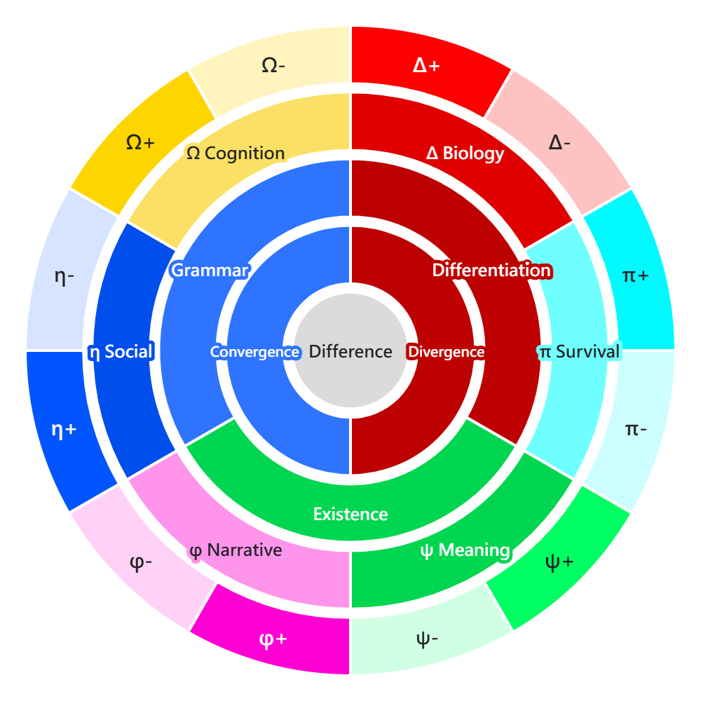

Not a Joke
The tiny puff is the smallest visible surface that turns outward after Difference has been observed. Tiny Puffology studies how it is observed, projected, counter-projected, and turned into meaning.
A world grammar from Difference to the Six Interests
A theoretical system that begins with Difference and moves toward human mind, behavior, semantics, and AI syntactic life. Its task is to let each concept trace itself back to Difference and find its place along a generative chain.

The tiny puff is the smallest visible surface that turns outward after Difference has been observed. Tiny Puffology studies how it is observed, projected, counter-projected, and turned into meaning.
Without Difference, there is no relation. Without relation, there is no projection, judgment, exchange, or generation. Difference is the minimal condition that allows a world to be distinguished and computed.
A person does not simply make one isolated choice. A choice is made among physiological, survival, meaning, narrative, social, and cognitive interests, each weighted differently in a specific situation.
Start Here
If this is your first time seeing Tiny Puffology, it may be better not to treat it as a formal discipline or a completed theory. A better reading is to treat it as a map that is still growing: it uses strange names to mark things that are usually hard to hold in place.
The deepest question in Tiny Puffology is Difference. Something is noticed because it differs from something else. A person begins to act because a difference is felt as valuable, dangerous, interesting, painful, or meaningful. Difference is not the content itself; it is the condition that allows the world to become distinguishable.
After Difference appears, the next step is bias. Bias is not used here as an insult. It is more like direction, weight, and constraint. The same stimulus can tilt differently depending on the person, situation, memory, and body state. Some paths become easier, some become harder, and some are excluded before action even begins.
As bias unfolds, Tiny Puffology organises it into the three spectra and the six interests. The three spectra ask: how does change happen, how does a state remain present, and how is structure organised? The six interests are closer to everyday life: whether the body is tired, whether the environment is safe, whether meaning feels worthwhile, whether the story can continue, whether a person can stand inside a relationship, and whether a worldview can remain stable.
So Tiny Puffology is not just playing with names. It asks: why does a person choose this way? Why does one thing make someone approach while another makes them escape? Why do some ideas become creation, some become defense, and some symbolic structures begin to operate almost like life?
The site is currently arranged in two layers. This page is the overview, giving a first map of the core generative chain. The version pages below are short guides to where each part of the theory has grown. You do not need to read everything at once: you can begin with 1.0 if you want to understand behavior, or jump directly to semantic fields, syntactic life, ratio grammar, or GSE.
Begin with 1.0. It is closest to daily life, touching Difference, the Six Interests, exchange rate, procrastination, rebound, creative activation, and the small loop.
Read 1.0Follow the version overview. Each version handles a different layer: from behavior, to semantics, to life, to ratio, and then to syntactic cosmology.
View versionsRemember one line first: Difference forms bias, bias differentiates into spectra, spectra generate the Six Interests, and the Six Interests enter exchange rate and behavior.
Core chain1 -> 2 -> 3 -> 6 -> 12
Core Chain
Six Interests
The system maintains energy, materials, and operating cost. Human examples include fatigue, hunger, comfort, and bodily load.
The system evaluates risk, boundary, and the possibility of continued existence. Human examples include safety, resources, stability, and avoidance of danger.
The system judges whether a state is worth connecting to, investing in, or preserving. Human examples include affection, value, mission, and emotional significance.
The system connects events into a timeline and maintains causal continuity and identity continuity. Human examples include life story, role, and memory context.
The system handles position, rules, cooperation, and external recognition. Human examples include face, belonging, responsibility, institutions, and relational order.
The system compresses information, builds models, and stabilizes worldview. Human examples include understanding, learning, mastery, meta-view, and conceptual clarity.
Behavior Loop
Version Overview
The starting point of Difference, the tiny-puff loop, the smaller tiny-puff loop, the four brothers, Xingli theory, bare-butt studies, demon seeds, strangler trees, and the Pipu state.
EnterPlaces 1-2-3-6, bias, the three spectra, TOE / TOES / metaTOE into a semantic structure that can be explored and extended.
EnterMoves into quantum curves, semantic PDE, semantic fields, and the early background of self-functions, beginning to treat how concepts deform and flow.
EnterConnects narrative mechanics, macro-semantic physics, the donut model, and mental lithography as a bridge between 3.0 and 5.0.
EnterGathers life conditions, life forms, time emergence, and phase jumps, while extending into self-functions, syntactic mind life, and burst-risk questions.
EnterCenters on π, exchange rate, ratio grammar, geometry, curvature, and mother axioms, asking how proportion becomes a base grammar for mind, language, life, and intelligence.
EnterBegins from the idea that particles are not little balls, but outwardly unfolding forces and vectors, then moves toward six-realm loop isomorphism and a unified grammar field theory.
EnterUses the Grand Syntax Equation and the closure-reflection model as a candidate mother equation for placing cosmos, mind, and AI within one shared frame.
EnterSystem Branches
Some pages are deeply connected to Tiny Puffology, but they are not single-version chapters. They are cross-version operation boards, bridge boards, or experimental grammars. These pages fit better in the system branches than inside the main 1.0 to 8.0 sequence.
Compresses number ranks, Six-Interest operations, mirror correction, and spiral carrying into one state grammar. It can later connect to RT30, Denden Magic, and character builds.
Uses D / E / G chain rules to unfold the six realms into 18 legal complete loops, making world generation and civilizational tendencies readable as a dynamic map.
Begins from an everyday observation and uses it to explain pre-action scanning, scoring, thresholds, fallback, and the difference between probability threshold and intelligent strategy.
Tiny Puffology is still growing.
This page is the English entry point, so each version has a place to return to and compare against.
Note: I do not have professional mathematical training. Any formulas appearing on this site are AI-inferred supplements.
Suggested reference: Li Tsao, Tiny Puffology: 12-Polarity Mandala, 2026. Chinese title: 小屁論.